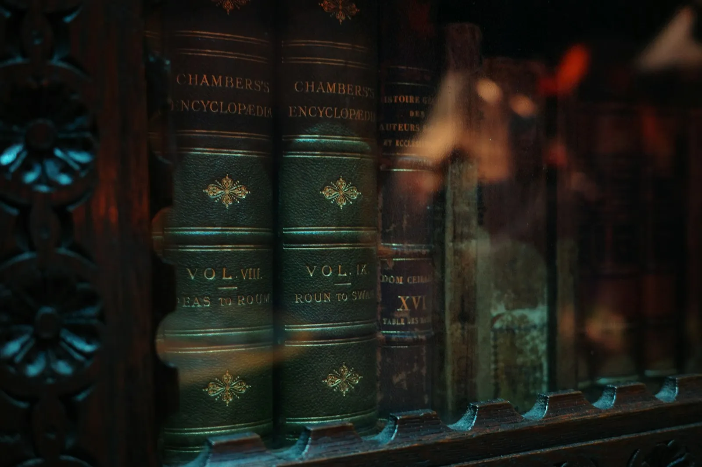
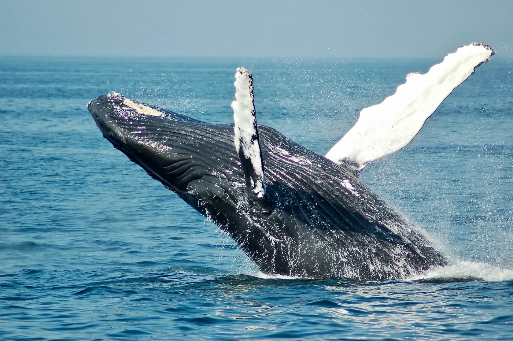
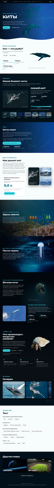
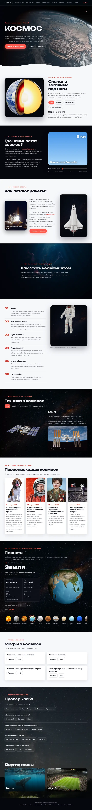
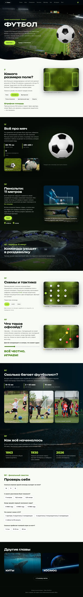

When I was a child, knowledge lived in books.
Diploma project · The Living Encyclopedia
Scroll, Play,Remember
The Effect of an Interactive Animated Web Encyclopedia on Children’s Knowledge Retention and Engagement
Structure

01Background
It started with a lesson about whales

02Project abstract
A living encyclopedia, tested with children
Note. A meta-analysis of 54 studies found that plain text is understood better on paper than on screen (Delgado et al., 2018). It compared plain text only, so a screen has to give more than text.
03Research question
How does an animated, interactive web encyclopedia page affect knowledge retention and engagement among children aged 10–12 in Bishkek, compared to a static page with the same content?
04Literature review
Forty years of research, one open question
05The product
Not Wikipedia. A journey.
Elena asked me this, and at first I could not remember. Now I know: the idea was born in my whales lesson, so the encyclopedia begins where it started.
06Methodology
Mixed methods: quantitative + qualitative
Quantitative = numbers: how much the formats differ. Qualitative = children’s words: why.
07Analysis and ethics
Honest numbers, safe children
Analysis
Ethics
08Why this research
This is my startup. First, proof it works.
Prototype
3 chapters
Research
30 children
More chapters
from the results
App launch
with investment
09See it live
Knowledge should feel alive



Thank you. Questions are welcome.